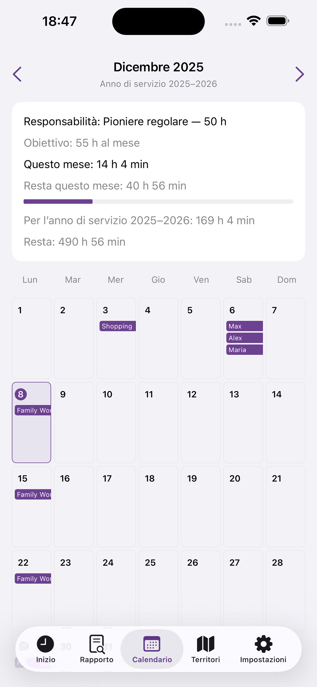
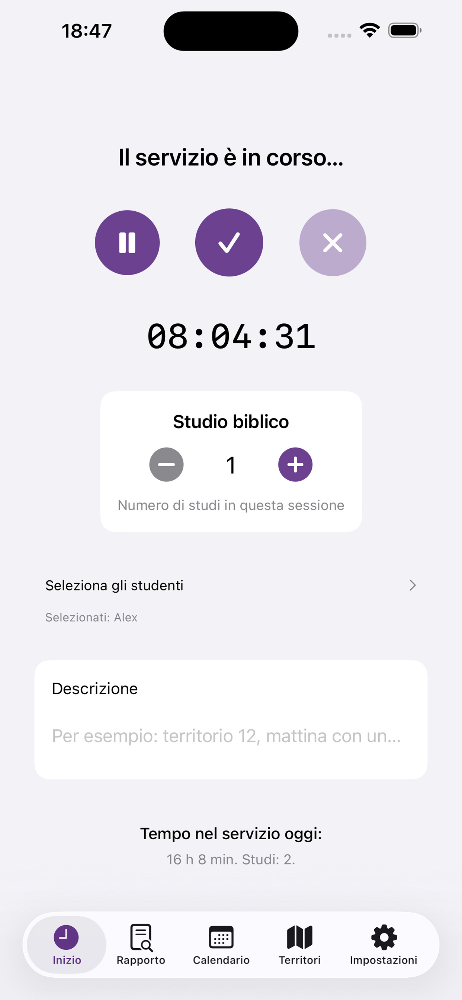
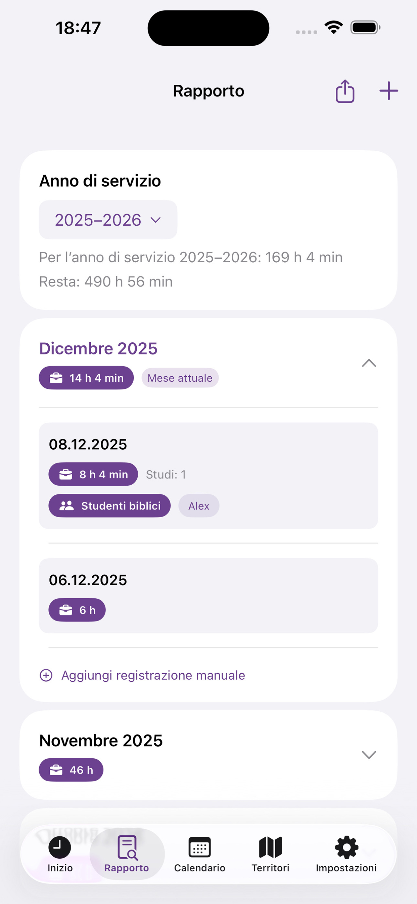
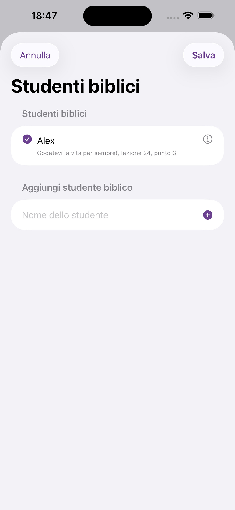
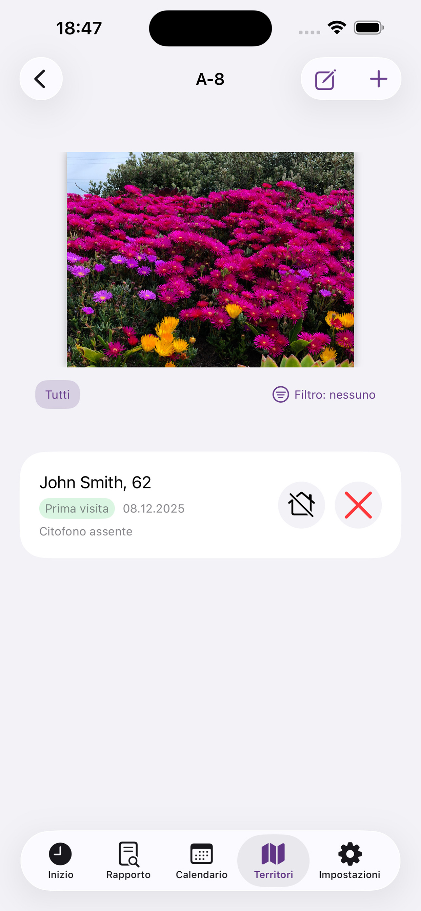
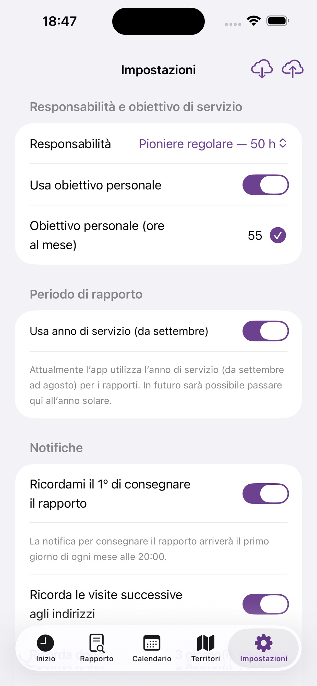
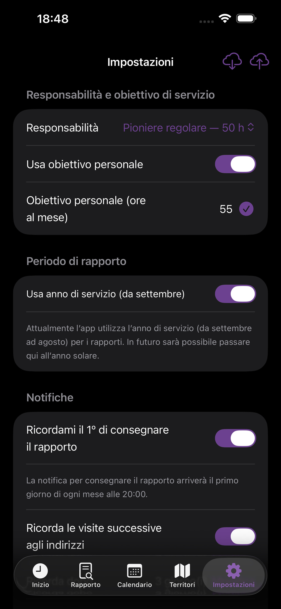
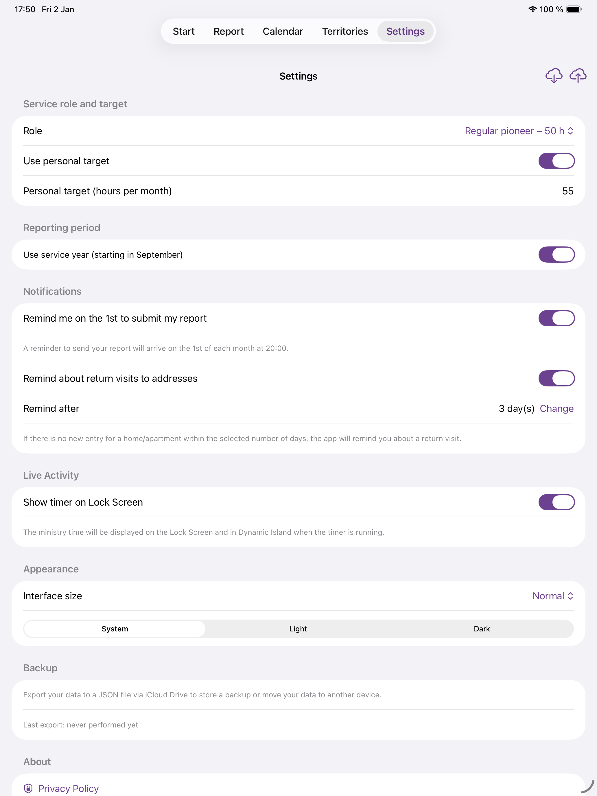

Il tuo compagno completo per il servizio di campo e i pionieri
JW Ministry è l'app per il servizio di campo dei Testimoni di Geova su iPhone e iPad: timer con Live Activities, gestione studenti biblici, rapporto mensile e per anno di servizio, obiettivi ore dei pionieri e schede dei territori.



Scopri tutte le schermate di JW Ministry
Screenshot reali dell'app in italiano — dal timer del ministero e gli studenti biblici al calendario del pioniere, territori e modalità scura OLED.









Tutto ciò che serve per un ministero ben organizzato
Progettata specificamente per le esigenze di proclamatori, pionieri ausiliari, pionieri regolari e speciali.
Timer intelligente, Widget e Dynamic Island
Avvia il timer del ministero dall'app, dal widget sulla schermata Home o dalla schermata di blocco. Il timer rimane sempre visibile nella Dynamic Island.
Studi biblici e progresso nelle pubblicazioni
Collega gli studi biblici direttamente alle voci del rapporto. Registra per ogni studente il libro (es. «Puoi vivere felice per sempre!»), la lezione e il punto.
Ruoli di servizio e obiettivo ore personale
Supporta Proclamatore, Pioniere ausiliario (15 o 30 ore), Pioniere regolare (50 ore), Pioniere speciale (90 / 100 ore) e obiettivo mensile personalizzato.
Anno di servizio (settembre–agosto) e Calendario
Pianifica le uscite di servizio e l'adorazione in famiglia. Confronta le ore pianificate con quelle effettive e converti i piani in voci del rapporto con uno swipe.
Territori, condomini e promemoria visite ulteriori
Crea schede territorio con foto della mappa, 10 colori e generatore di appartamenti per scale e piani. Cerca per indirizzo o nome e ricevi avvisi per le visite ulteriori.
Privacy 100% sul dispositivo e backup iCloud
Nessuna registrazione, nessun account e nessun server esterno. Tutti i dati e le foto dei territori restano solo sul tuo iPhone/iPad con backup rapido su iCloud Drive.
Novità della versione 1.8
- Calcolo automatico delle ore pianificate nel mese nel Calendario con doppia barra Piano vs. Effettivo.
- Conversione rapida di un impegno pianificato nel Calendario direttamente nel Rapporto con uno swipe.
- Ricerca istantanea per indirizzo o nome in tutti i Territori e 10 temi colore per le schede.
- Supporto per il prossimo anno di servizio (2026–2027) nella scheda Rapporto.
- Piena compatibilità con le ultime versioni di iOS e iPadOS e protezione avanzata dei backup.
Perché proclamatori e pionieri scelgono JW Ministry
Confronto completo per rapporto di servizio, programma da pioniere e gestione territori.
| Funzionalità | Appunti cartacei | Vecchie App | JW Ministry 1.8 |
|---|---|---|---|
| Timer dal vivo su schermata di blocco e Dynamic Island | No | No | Sì (Live Activities) |
| Calcolo ore pioniere (15, 30, 50 h) e anno di servizio (600 h) | Manuale | Parziale | Automatico + Obiettivo personale |
| Confronto Piano vs. Reale nel Calendario e swipe verso il Rapporto | No | No | In un solo gesto |
| Generatore condomini + Foto mappe territorio e 10 colori | Biglietti di carta | Solo testo | Schede visive + Ricerca |
| Promemoria visite ulteriori e invio rapporto il 1° del mese | No | Base | Notifiche iOS intelligenti |
| Privacy 100% locale e backup completo con foto su iCloud Drive | Facile da perdere | Errori cambiando iPhone | 100% Offline e sicuro |
| Supporto nativo per nuovo iOS, iPad, modalità OLED e 35+ lingue | — | Non aggiornate | Design nativo SwiftUI |
Creata per il servizio di campo e i pionieri dei Testimoni di Geova
Come JW Ministry aiuta proclamatori, pionieri ausiliari, regolari e speciali durante tutto l'anno di servizio.
Pionieri Regolari e Speciali (50, 90 e 100 ore / Anno di servizio 600 ore)
Monitora facilmente la quota mensile di 50 ore e l'obiettivo annuale di 600 ore da settembre ad agosto. Imposta un obiettivo personale (es. 55 ore) e confronta nel Calendario le ore pianificate con quelle effettive.
- Bilancio automatico di 50 ore mensili e 600 ore nell'anno di servizio
- Obiettivo mensile personalizzato (es. 55 ore)
- Doppia barra di avanzamento: ore pianificate vs. effettive
Pionieri Ausiliari (15 e 30 ore) e Proclamatori di congregazione
Nei mesi di campagna speciale, visita del sorvegliante di circoscrizione o Commemorazione, passa a Pioniere ausiliario da 15 o 30 ore con un tocco. Il promemoria il 1° del mese alle 20:00 ti ricorda di inviare il rapporto.
- Passaggio rapido agli obiettivi di 15 o 30 ore
- Condivisione immediata del rapporto mensile
- Promemoria automatico il 1° del mese alle 20:00
Territori di casa in casa, condomini e visite ulteriori
Crea schede territorio digitali con foto della mappa, 10 colori e generatore automatico di interni per scale e piani. Annota «Prima visita», «Assente» o «Rifiuto» e cerca rapidamente qualsiasi nota.
- Generatore di appartamenti per scale e piani
- Foto delle mappe, 10 colori e ricerca per nome o indirizzo
- Avvisi automatici per le visite ulteriori
Progresso studi biblici e moderna alternativa a ServicePlanner / MyTime
Salva per ogni studente la lezione attuale nel libro «Puoi vivere felice per sempre!». Con widget, Dynamic Island e modalità scura OLED, è la soluzione ideale su iPhone e iPad.
- Tracciamento lezioni di «Puoi vivere felice per sempre!»
- Design nativo iOS e iPadOS con Dynamic Island e OLED
- Sostituto moderno di ServicePlanner e MyTime
Recensioni di proclamatori e pionieri
Cosa dicono i fratelli e le sorelle che usano JW Ministry ogni giorno nel ministero.
“Vedere il totale delle ore pianificate nel Calendario confrontato con le ore effettive mi aiuta tantissimo a mantenere il programma delle 50 ore.”
“Il timer sulla schermata di blocco e lo swipe per passare un impegno dal Calendario al Rapporto sono comodissimi. App veloce e totalmente privata.”
“Il generatore di condomini e la ricerca per nome o indirizzo nei territori hanno sostituito tutti i miei foglietti di carta.”
Completamente tradotta in oltre 35 lingue
L'interfaccia dell'app, i widget e le notifiche si adattano automaticamente alla lingua del tuo iPhone o iPad:
Sostieni lo sviluppo di JW Ministry
JW Ministry è gratuita, senza pubblicità né abbonamenti. Se l'app ti è utile nel ministero, puoi sostenere i futuri aggiornamenti iOS e il rinnovo annuale della licenza Apple Developer:
Sostieni con Carta (Internazionale)
Donazione rapida tramite Boosty o Patreon:
Criptovalute dirette (0% commissioni)
Trasferimento diretto al portafoglio dello sviluppatore:
TQQxYhThQGngj887Lvq9TnKtyyYMcUDFNw
UQBNBroTUyMG0YqgiHGXwVKO_rKe5d2y7gXqvICREjBwuKYk
Domande frequenti (FAQ)
Come si affianca JW Ministry all'app JW Library?
Mentre JW Library serve per leggere la Bibbia, le pubblicazioni e seguire le adunanze, JW Ministry è pensata per gestire il tuo servizio di campo personale: contare le ore con il timer, pianificare l'orario da pioniere (15, 30, 50 ore), organizzare i territori e seguire gli studenti biblici.
Dove vengono salvati i miei rapporti e le note sui territori?
Esclusivamente nella memoria locale del tuo iPhone o iPad. Nessun dato viene mai inviato a server esterni.
Come trasferisco i dati su un nuovo iPhone?
Nella scheda Impostazioni tocca l'icona della nuvola con la freccia in alto per esportare il backup completo su iCloud Drive e ripristinalo sul nuovo dispositivo con un tocco.
L'app funziona senza internet mentre predico?
Sì, funziona al 100% offline anche senza connessione dati o Wi-Fi.